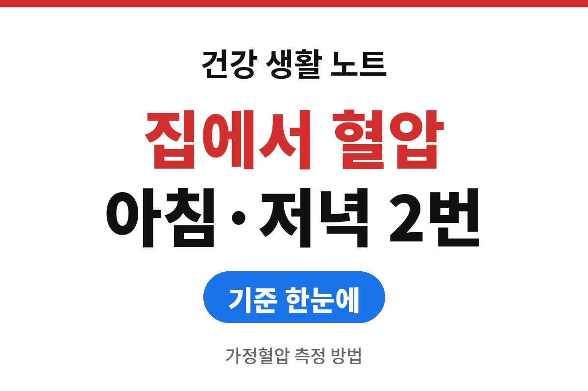
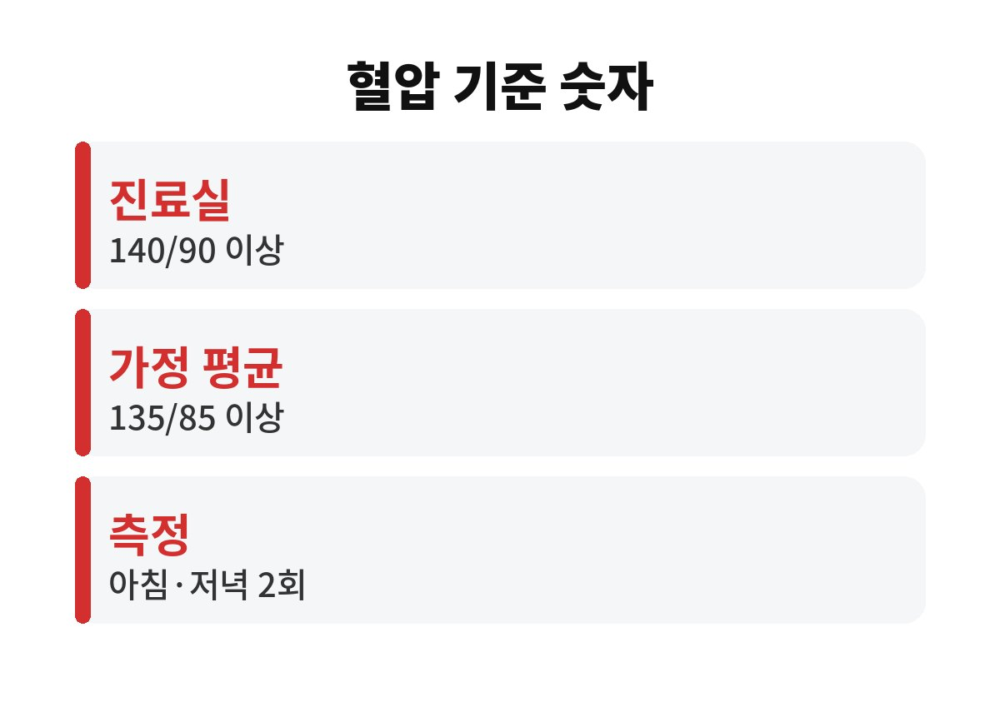
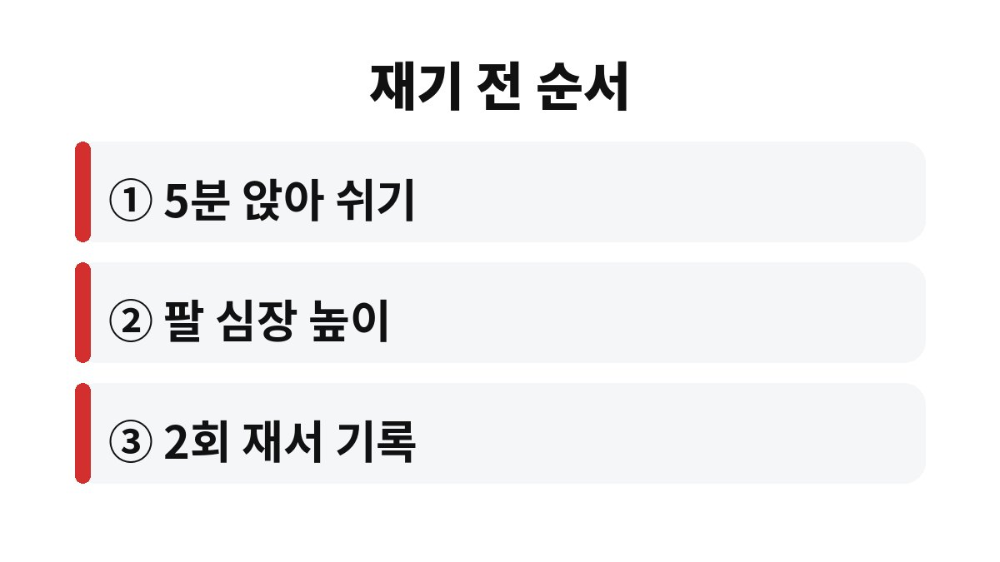

가정혈압 측정 방법은 아침에 일어나 1시간 이내, 그리고 잠자기 전 하루 두 번을 같은 자세로 재는 것이 출발점이다.
대한고혈압학회 진료지침은 진료실 혈압 140/90mmHg 이상을 고혈압으로 보고, 집에서 잰 평균값은 135/85mmHg 이상을 기준으로 삼는다.
날이 추워지면 혈관이 수축해 혈압이 오르기 쉬운 시기라, 병원에 가기 전 집에서 쌓은 기록이 진료 때 훨씬 쓸 만한 자료가 된다.
진료실에서 잰 혈압은 긴장 때문에 평소보다 높게 나오는 경우가 있다.
반대로 병원에서는 정상인데 집에서는 높은 사람도 있다.
그래서 진료지침은 집에서 잰 혈압을 함께 보도록 안내한다.
가정혈압 기준이 5mmHg 낮은 것은 집이 더 편안한 환경이라 평균이 낮게 나오기 때문이다.
| 구분 | 고혈압 기준 | 측정 상황 |
|---|---|---|
| 진료실 혈압 | 140/90mmHg 이상 | 의료기관에서 1회 방문 때 측정 |
| 가정혈압 평균 | 135/85mmHg 이상 | 아침·저녁 측정값을 모아 평균 |
병원에서만 높게 나오는 경우를 백의 고혈압, 병원에서는 정상인데 집에서 높은 경우를 가면 고혈압이라 부른다.
두 경우 모두 진료실 숫자 한 번으로는 놓치기 쉬워서 집에서 쌓은 기록이 필요하다.
60대 부모님 혈압을 대신 재 드릴 때도 같은 기준과 같은 순서를 쓴다.
집에서 높게 나온 숫자 하나만으로 병을 단정할 수는 없다.
진단과 약 조절은 의사가 기록 전체를 보고 정한다.
가정용 혈압계는 의료기기 허가를 받은 제품인지 포장에서 확인할 수 있다.
처음 쓰는 날에는 병원에서 같은 날 잰 값과 견주어 기계 오차가 얼마인지 알아 두면 이후 숫자를 읽기가 편하다.

질병관리청이 안내하는 고혈압 예방관리 수칙에도 정기적인 혈압 측정이 들어 있다.
측정은 요령만 지키면 어렵지 않다.
기록은 두 번 잰 값을 모두 적는다.
예를 들어 아침 7시에 132/84와 130/82가 나왔다면 두 줄을 그대로 쓰고 평균은 나중에 계산한다.
저녁에는 목욕, 음주, 식사 직후를 피한다.
겨울 아침에는 방이 차가워 혈압이 더 오를 수 있어 방 온도를 한 줄 남겨 두면 의사가 읽을 때 도움이 된다.
이미 혈압약을 먹고 있다면 숫자가 낮게 나와도 약을 임의로 줄이거나 끊지 않는다.

외출에서 막 돌아와 겉옷만 벗고 재면 숫자가 실제보다 높게 나온다.
5분 앉아 있는 시간을 빼먹으면 기록 전체가 흔들린다.
손목형은 손목 높이가 심장에서 조금만 벗어나도 오차가 커진다.
진료지침은 팔 윗부분에 감는 상완형 사용을 권한다.
이미 손목형을 쓰고 있다면 병원에서 같은 날 잰 값과 비교해 보는 편이 안전하다.
대화를 하거나 휴대폰을 보면서 재면 혈압이 오른다.
다리를 꼬고 앉는 것도 숫자를 올리는 흔한 원인이다.
측정하는 1~2분은 말없이 가만히 있는다.
수첩이나 휴대폰 메모에 날짜, 시간, 수축기·이완기 숫자를 적어 둔다.
하루 값이 135를 넘었다고 놀랄 필요는 없다.
여러 날의 평균이 의미가 있다.
다음 진료나 검진 전에 일주일치 기록을 들고 가면 의사가 약이 필요한지 훨씬 빨리 판단한다.
두통, 흉통, 갑작스러운 말 어눌함이나 한쪽 팔다리 힘 빠짐이 함께 오면 기록을 기다리지 말고 바로 응급실로 간다.
참고 자료: 질병관리청 「고혈압 예방관리 6대 수칙」(2026년 11월 확인) · 대한고혈압학회 「2022 고혈압 진료지침」(2026년 11월 확인)
※ 2026년 기준 공식 기준을 바탕으로 정리한 일반 건강 정보이며, 증상이 계속되거나 지병이 있다면 전문의와 상담하길 바란다.